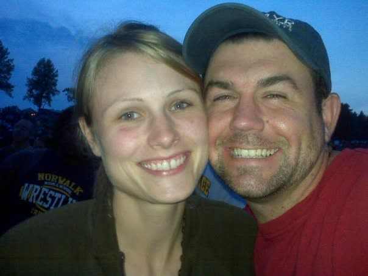
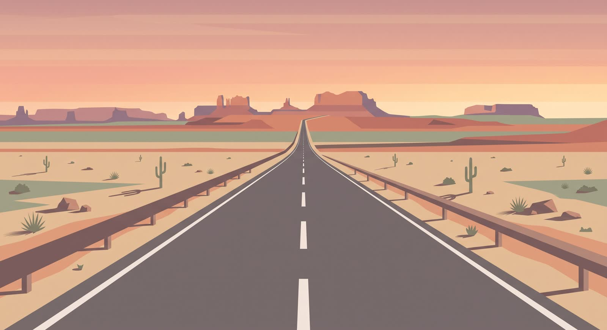
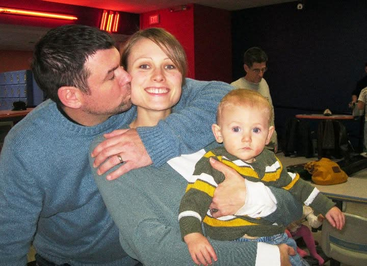
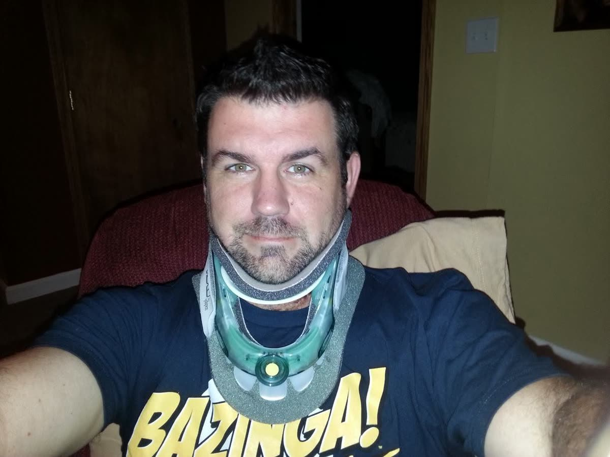
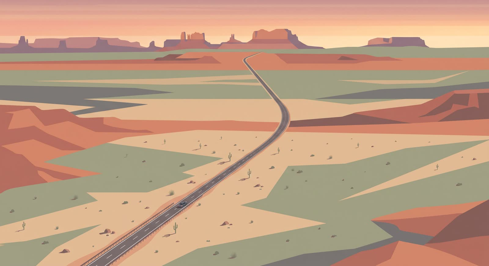
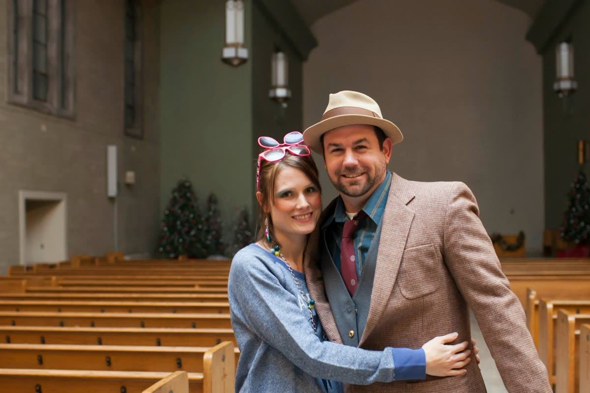
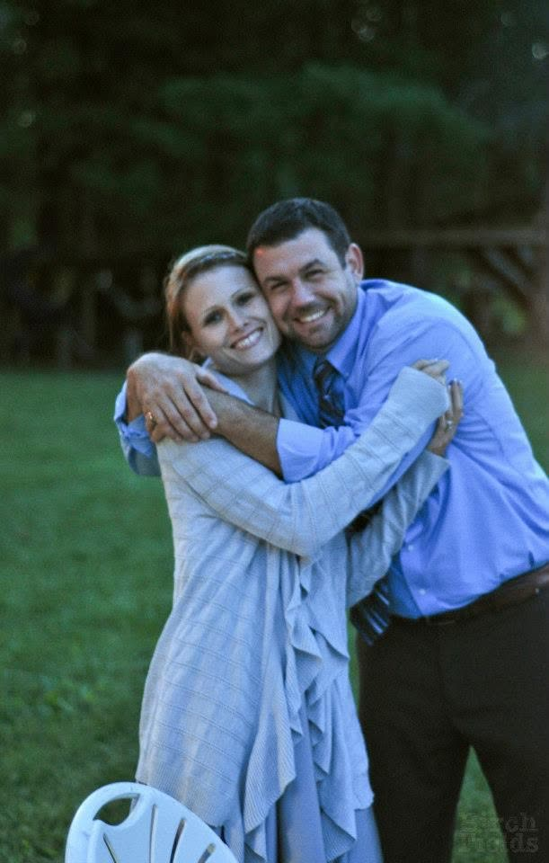
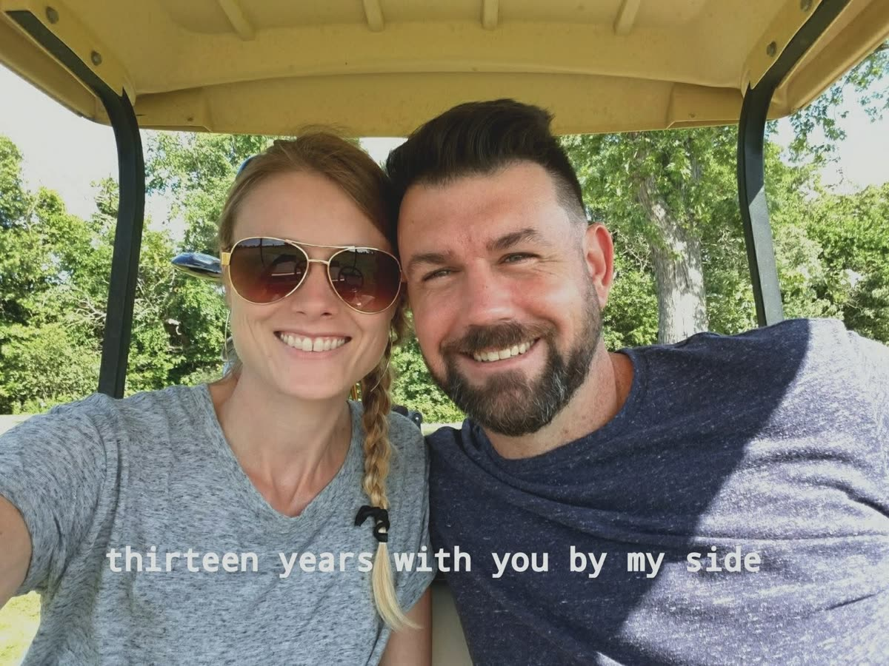
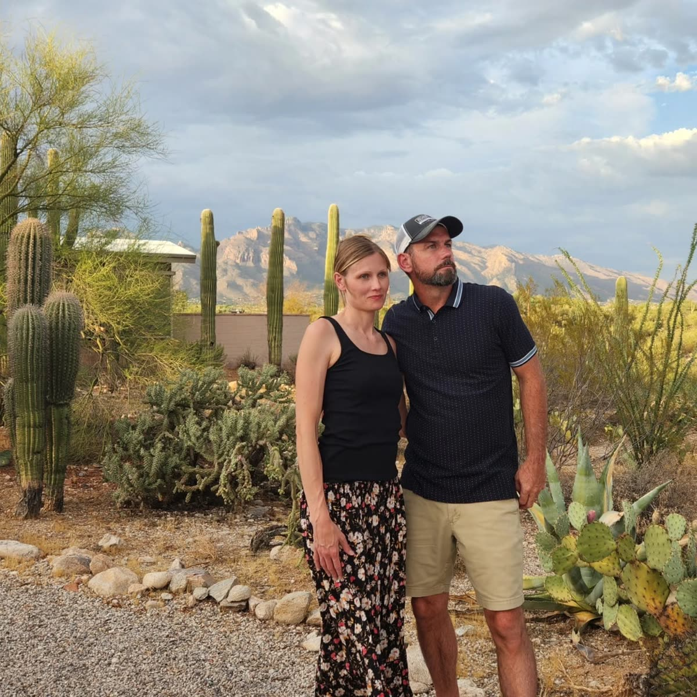

MILE1
Fair warning: I originally built this with 23 markers on it. Then I did the math again. Honestly, I’m glad the math was wrong. It means number 23 is still out ahead of us, and that one gets a different start.
Good morning from Atlanta, Dawn.
You’re in Albuquerque. This is the first anniversary morning in 22 years that I haven’t woken up next to you. So I built you a road.
Drive it with me.
Fair warning: I originally built this with 23 markers on it. Then I did the math again. Honestly, I’m glad the math was wrong. It means number 23 is still out ahead of us, and that one gets a different start.
You walked into church and my first thought was not remotely spiritual.
Our first date was so blah that I didn’t want a second one. Then you called and asked me out. Let the record show: this entire life was your idea. Best call you ever made. (Second best. You’ll see.)
I flew from Saipan to Ohio to ask you to marry me. I’ve always hated how I proposed. Twenty-two years later, here’s what I know: I’d redo the proposal a hundred different ways. I would never redo the yes.
We got married to do the right thing. We were kids doing our best with the map we were handed. And somewhere along the way, the duty burned off and what was left underneath was the real thing. We married for the wrong right reasons and fell in love anyway, and it is only getting better from here. I dare anybody to write a better love story than that.

Our wedding day, I mostly remember you glowing. Still do it, by the way. You should look into that.

You know our anniversary song. The one I play every year. There’s that line in it, the one about how you could’ve had a better man, but I’m the one you chose. I play the whole song for that line. Every year it costs me something to hear it, and every year I’m more grateful you chose the way you did.
VERONICA. No, I still don’t know why. Yes, it’s permanent.
Nobody on this planet was better with our babies than you. Nobody. I’d sit there watching you and think, I am wildly outclassed here. Four times over, it was the most impressive thing I have ever seen a human being do.

You would lie with the kids for an hour while they fell asleep. At the time I thought it was too long. I was an idiot. I would pay any amount of money to stand in that hallway one more time and watch you do it.
2008 took the business. It did not take you. When I couldn’t function, you kept the house running, the kids fed, the lights on. You never made me feel like less of a man for it. I have never forgotten one day of that.

Here’s the thing I’ve learned about you that took me years to believe: you are not leaving because it’s hard. Life has thrown us plenty of hard. You just keep trodding. You are the steadiest person I have ever known, and I got to marry you.

You homeschooled every one of our kids at some point. Then you turned around and built a whole career helping other people’s kids, and you’re better at your craft every single year. The woman who taught at our kitchen table is now the intervention specialist other teachers call. I watched the entire arc, and I’m still applauding.
Every single vacation, we arrive and I have my traditional momentary breakdown, and the whole family makes fun of me for it. I want the record to show: I have no defense. Roast away. It’s yours forever.

Black coffee, both of us. No cream, no sugar, no nonsense. Twenty-two years and we never sweetened it and never needed to. That’s basically our whole marriage in a mug.
You were raised in it, wound tight and certain. I crashed in from outside, reborn and starving to understand God and truth. Two completely different roads into faith, and then one long deconstruction that could have torn us in half. Instead we walked out the other side together, more unified than the day we started. The reason we got married dissolved, and we looked at each other and chose this anyway. That’s not luck, Dawn. That’s a miracle with your name on it.

I’ve made that drive with Silas before. This time it’s you in the driver’s seat, and I’m so glad it worked out that way. You get the milestone. You get the handoff. Some things are supposed to be yours.
Every year, one trip, just us. Our anniversary trips are my favorite tradition we own. This year the calendar beat us, so I built you this instead. It’s not a trip. It’s an IOU with a scroll bar.

If I could go back to 2004 and tell that nervous kid at the altar one thing, it’s this: She can handle it. All of it. She is capable and steady and sexy and worthy of the best life you can build her. So get to work.
I’m not done building for you. I look at the last 22 years and all I can think is: the next 22 get to be better. That’s not a promise about logistics. It’s a promise about direction.

Twenty-two years later, and you still turn me on. I just put that on the internet. You’re welcome.
You drove these roads as a kid. A couple of decades later, here you are again, same highways, different seat, your own son riding next to you. I imagine it all looks different now. You’re 420 miles from Phoenix this morning. I’m 1,400 miles from you. Here’s what 22 years taught me: the distance has never once mattered. I’d ride shotgun with you anywhere, Dawn. Happy anniversary. Now go wake up our boy, he’s got a co-op to get to.
1,400 MILES. NEVER MATTERED.
the voice memo is still on its way down the highway
Bryon